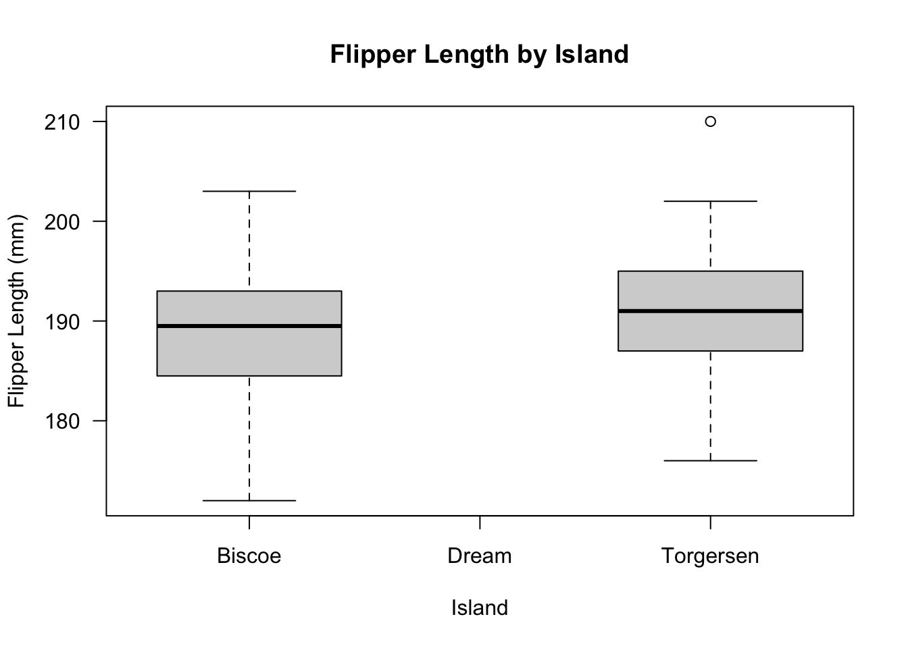
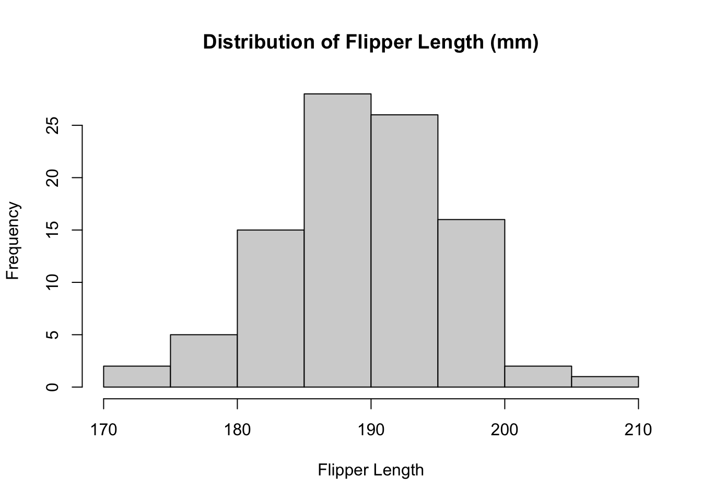
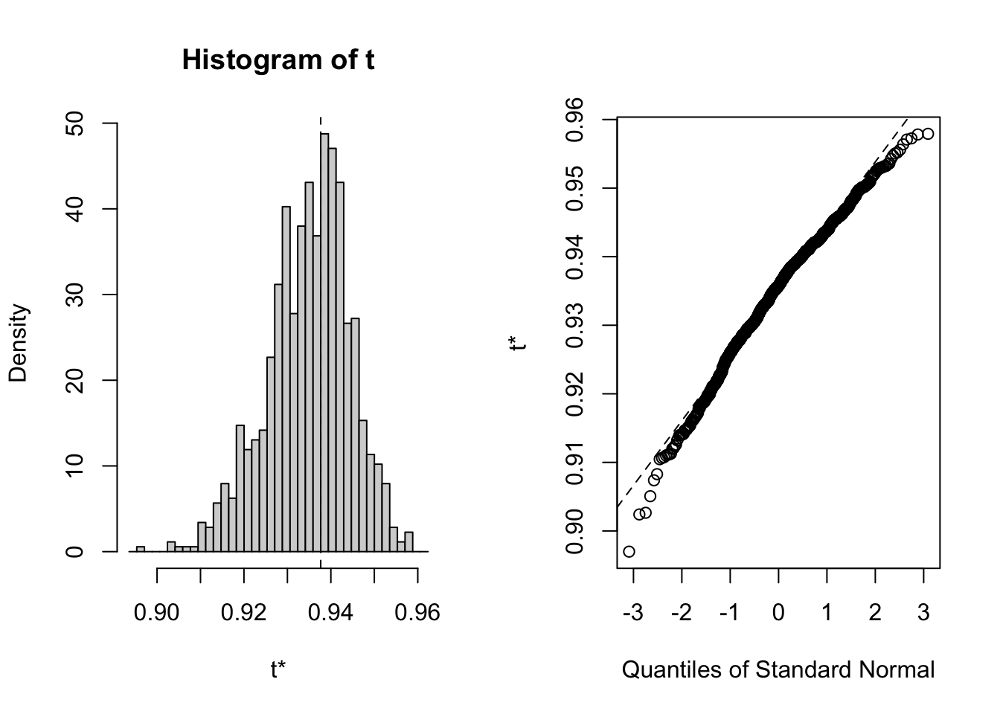

Bootstrapping is a technique from Efron (1979) that is built on a simple idea: if the data we have is a sample from a population, why don’t we sample from our own data to make more samples? Now, because we don’t have access to any new data, we’re going to take samples of our data set with replacement.
12.1.1 When to use bootstrapping?
The purpose of bootstrapping is to increase the sample size for our analysis when the sample we have been given is small.
12.2 Packages
palmerpenguins - The dataset we will using in this Lesson.
tidyverse - includes the packages to be used for data wrangling.
boot - The R package boot generates bootstrap samples in R.
── Attaching core tidyverse packages ──────────────────────── tidyverse 2.0.0 ──
✔ dplyr 1.1.4 ✔ readr 2.1.5
✔ forcats 1.0.0 ✔ stringr 1.5.1
✔ ggplot2 3.5.1 ✔ tibble 3.2.1
✔ lubridate 1.9.3 ✔ tidyr 1.3.1
✔ purrr 1.0.2
── Conflicts ────────────────────────────────────────── tidyverse_conflicts() ──
✖ dplyr::filter() masks stats::filter()
✖ dplyr::lag() masks stats::lag()
ℹ Use the conflicted package (<http://conflicted.r-lib.org/>) to force all conflicts to become errors
12.3 Penguins
This Data was collected and made available by Dr. Kristen Gorman and the Palmer Station, Antarctica. The palmerpenguins package contains two datasets. One is called penguins, and is a simplified version of the raw data.
Penguins includes measurements for penguin species, island in Palmer Archipelago, size (flipper length, body mass, bill dimensions), and sex. The full dataset contains A tibble with 344 rows and 8 variables(Horst, Hill, and Gorman 2020).
Research Question: What is the difference in flipper length of the Adelie penguin from two different Islands?
# load the datadata(penguins)# see the structure of the datastr(penguins)
tibble [344 × 8] (S3: tbl_df/tbl/data.frame)
$ species : Factor w/ 3 levels "Adelie","Chinstrap",..: 1 1 1 1 1 1 1 1 1 1 ...
$ island : Factor w/ 3 levels "Biscoe","Dream",..: 3 3 3 3 3 3 3 3 3 3 ...
$ bill_length_mm : num [1:344] 39.1 39.5 40.3 NA 36.7 39.3 38.9 39.2 34.1 42 ...
$ bill_depth_mm : num [1:344] 18.7 17.4 18 NA 19.3 20.6 17.8 19.6 18.1 20.2 ...
$ flipper_length_mm: int [1:344] 181 186 195 NA 193 190 181 195 193 190 ...
$ body_mass_g : int [1:344] 3750 3800 3250 NA 3450 3650 3625 4675 3475 4250 ...
$ sex : Factor w/ 2 levels "female","male": 2 1 1 NA 1 2 1 2 NA NA ...
$ year : int [1:344] 2007 2007 2007 2007 2007 2007 2007 2007 2007 2007 ...
First we created empty vectors to list and store data points.
Our for loop will organize the data for two of the islands where Adelie Penguins reside - Torgersen and Biscoe
For simplicity, we excluded the island of Dream because their population size was much larger compared to Torgersen and Biscoe populations.
Code
new_penguins_df <-filter(penguins, species =="Adelie", island !="Dream") %>%select(species, island, flipper_length_mm) %>%arrange(island, .by_group =TRUE) %>%drop_na()str(new_penguins_df)
Boxplots and histograms will be useful to understand the distribution of the data.
Our data is not normal based on the distribution.
Code
# check the boxplot of the databoxplot( new_penguins_df$flipper_length_mm ~ new_penguins_df$island, las =1, ylab ="Flipper Length (mm)",xlab ="Island",main ="Flipper Length by Island")

Code
# check the histogram of the datahist(x = new_penguins_df$flipper_length_mm,main ="Distribution of Flipper Length (mm)",xlab ="Flipper Length")

12.3.2 Bootstrapping Test
We need the difference in means in order to conduct our permutation test. We will test whether the difference is significant so that we can reject the null. This indicates that there is a different in flipper length among the same species that come from different islands.
Code
# set a seed so that our random results can be replicated by other people:set.seed(20150516)# take a random re-sample of the data that is the *same size*N <-length(new_penguins_df$flipper_length_mm)# a random sample:sample(new_penguins_df$flipper_length_mm, size = N, replace =TRUE)
# number of bootstrap samplesB_int <-10000# create a list of these thousands of samples bootstrapSamples_ls <-map(.x =1:B_int,.f =~{sample(new_penguins_df$flipper_length_mm, size = N, replace =TRUE) })# subset of the random samples bootstrapSamples_ls[1:3]
12.3.3 Building Confidence Intervals for Various Statistics: Example 1
# The Sample MeanbootMeans_num <- bootstrapSamples_ls %>%# the map_dbl() function takes in a list and returns an atomic vector of type# double (numeric)map_dbl(mean)# a normally distributed histogram using the samples from bootstrappinghist(bootMeans_num)
# Custom function to find correlation between the bill length and depth corr.fun <-function(data, idx) {# vector of indices that the boot function uses df <- data[idx, ]# Find the spearman correlation between# the 3rd (length) and 5th (depth) columns of datasetcor(df[, 3], df[, 4], method ='spearman')}# Setting the seed for reproducability of resultsset.seed(42)# Calling the boot function with the datasetbootstrap <-boot(iris, corr.fun, R =1000)# Display the result of boot functionbootstrap
# Plot the bootstrap sampling distribution using ggplotplot(bootstrap)

# Function to find the bootstrap CIboot.ci(boot.out = bootstrap,type ="perc")
BOOTSTRAP CONFIDENCE INTERVAL CALCULATIONS
Based on 1000 bootstrap replicates
CALL :
boot.ci(boot.out = bootstrap, type = "perc")
Intervals :
Level Percentile
95% ( 0.9142, 0.9519 )
Calculations and Intervals on Original Scale
12.4 Conclusion
The bootstrapping method is useful when working with data with relatively small samples in order to increase the sample size and normality of the data.
Horst, Allison Marie, Alison Presmanes Hill, and Kristen B Gorman. 2020. Palmerpenguins: Palmer Archipelago (Antarctica) Penguin Data. https://doi.org/10.5281/zenodo.3960218.